范围：GeoWind2Plan（arXiv 2609.36056，作者声明 NeurIPS 2026 Spotlight）的复现与可信评测；风场重建、稀疏观测、风感知规划、LLM 程序搜索四类顶会顶刊 baseline 的部署与跑通状态；附我们的 4D 风场航线 demo（浏览器内实时预测风场并规划无人机航线，可在线交互）。
2026-10-30 数字来源：我们的实验结果文件 图片和视频均为相对路径，整个文件夹可直接打包
故事线：在可信评测（GPU 修复 + 严格检查）下研究「风场信息 → 路线决策」。主线是面向决策的风场学习 + 能收敛的 GPU 批量规划器，支线是面向路线排序的观测选点和高风速风险约束。LLM（Qwen）只做决策层和程序搜索，不直接输出轨迹。
| 工作项 | 状态 | 关键数字 / 产物 |
|---|---|---|
| GeoWind2Plan 官方复现 | ✅ 完成 | 7 个配置 × 256 任务全部 exit 0。不做门控时，CFD / GeoWind2Plan 规划相对不用风的能耗为 −2.36…−18.93% / −2.06…−14.66%；但四种方法同时通过净空检查的任务只有 3–24 / 256（§5 R1） |
| 可信评测协议 | ✅ 完成 | IPOPT 在三维风场下收敛 0–1.2%，原始输出严格通过 4.6–11.2%。GPU 修复后通过 89.7–98.1%，规划能耗变化中位数 0.05–0.63%（4 m/s）（§3.1、§5 R2） |
| 风场 baseline（LOBO 重训） | ✅ 完成 | UNet3D / FNO3D 场 RMSE 1.07–1.42 m/s，GeoWind2Plan 0.74–0.82 m/s；完整重规划回收率 UNet 73.6–85.7%、GeoWind2Plan 76.8–86.0%，大幅重叠（§5 R3–R4） |
| 稀疏观测 baseline | ✅ 完成 | 5 种重建 × 5 种选点 × 3 个预算。K=32 时沿路线均匀 + IDW 的 regret 从 0.477% 降到 0.299%（−37%）；按最大误差选点反而 +44%（§4 表 2） |
| 风速外推（街区 A，2/4/8 m/s） | ✅ 完成 | 与 CFD 规划的能耗差距 +0.39 / +1.37 / +2.48%；8 m/s 时 GeoWind2Plan 修复后的 640 个候选中有 293 个（46%）在 CFD 风下超出空速或推力限制（§5 R6） |
| 顶会顶刊 baseline 部署 | ✅ 完成 | 23 个官方仓库（commit 和许可已入档）、2 个 Python 环境；WindSeer / PhySense / Senseiver / Transolver / FNO3D / GINO 6 个模型 GPU smoke 通过（§4 表 3） |
| WindSeer 完整复现 | 🔄 数据就绪，训练按要求暂缓 | 官方数据 235.5 GB 下载完成并校验：10/10 文件 MD5 + SHA1 与 ETH LibDrive 发布值一致，6/6 个 HDF5 结构检查通过，7,285 个流场与官方 README 一致。官方没有发布权重，需从头训练（论文设置 3000 epoch）；训练与评测脚本已交付（§3.3、§7） |
| LLM / 程序搜索方向 | 🔄 调研完成，代码就位 | FunSearch、OpenEvolve、ShinkaEvolve、ReEvo、EoH、Eureka、LLM-SR、LLAMBO、VoxPoser、Zephyrus 共 10 个框架。定位：Qwen 做决策层或进化程序，不直接出轨迹（§4 表 4、§9.2） |
| 4D 风场航线 demo（GeoWind Web Lab） | ✅ 交互版已上线 | 浏览器内 WebGPU 风场推理约 1.9 s，四条航线全部通过独立净空检查；默认任务预测风航线比不用风省 6.3%，收回 CFD 节能的 77.9%。交互版放在本站，打开后在自己的电脑上运行（§6） |
| 下游任务与数据核实 | ✅ 完成（10-30） | 下游任务是“已知起终点的单次节能航线规划”，能耗在 CFD 风里按 Wh/km 计算（两套代码核实，§3）。数据只有 7 个独立 CFD 工况、来流方向相同，5 个街区的任务方向也相同（§7.1）。按顺风 / 逆风 / 侧风分组时 GW2P 回收率 86.6 / 86.3 / 80.0%，论文 87.9 / 85.7 / 75.0%（§5 R4b） |
| 真实城市（东京）+ 自由探索 agent | 🔄 调研完成，待讨论 | 东京建筑模型（PLATEAU）免费可商用，但公开数据里没有东京飞行高度的风场真值，需要自己算；列了现有数据能做的 5 个下游任务和到东京的 4 步路线（§11） |
| 为决策而测风（任务再思考） | 🔄 调研和实验设计完成，判定实验待做 | 补查了选点、面向决策的学习与实验设计、风感知规划、城市具身 agent 等相关工作，最接近的是 CRMI。用已有候选池核对：街区 A 在 8 m/s 时 35% 的 GW2P 候选途中超出空速限制；2–4 m/s 的超限几乎都在起点（§10） |
配图来自各论文 arXiv HTML 版或官方仓库自带的图片，版权归原作者，点击图片看原尺寸。会议 / 期刊信息以官方仓库 README 或出版页为准；“作者声明”表示我们没有在出版方页面独立核实。
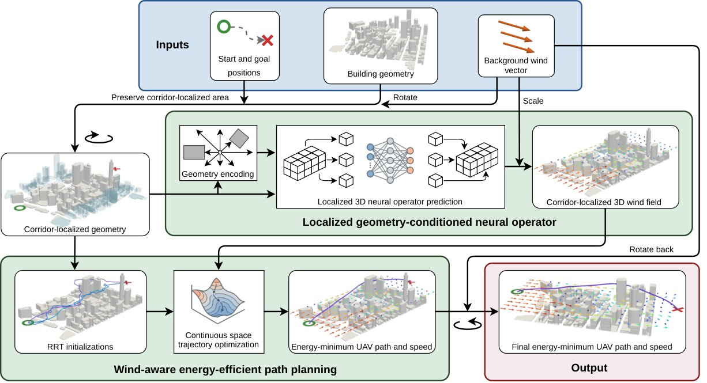
做了什么：用 CityFFD GPU LES 生成城市平均风，训练几何条件的局部 3D FNO，只对任务走廊推理（约 3 s，CFD 约 8 h）；规划用 RRT 多初值 + CasADi/IPOPT 求能耗最优，最后在 CFD 风中回放评估。作者报告相对不用风，顺风 / 逆风 / 侧风省电 6.9% / 12.7% / 4.5%，回收 CFD 收益的 87.9% / 85.7% / 75.0%。
我们这边：7 个配置的规划矩阵已复现；可信评测下回收率 76.8–86.0%。公开仓库只有规划代码和预计算的风场预测，没有 3D FNO 训练和新场景推理链。
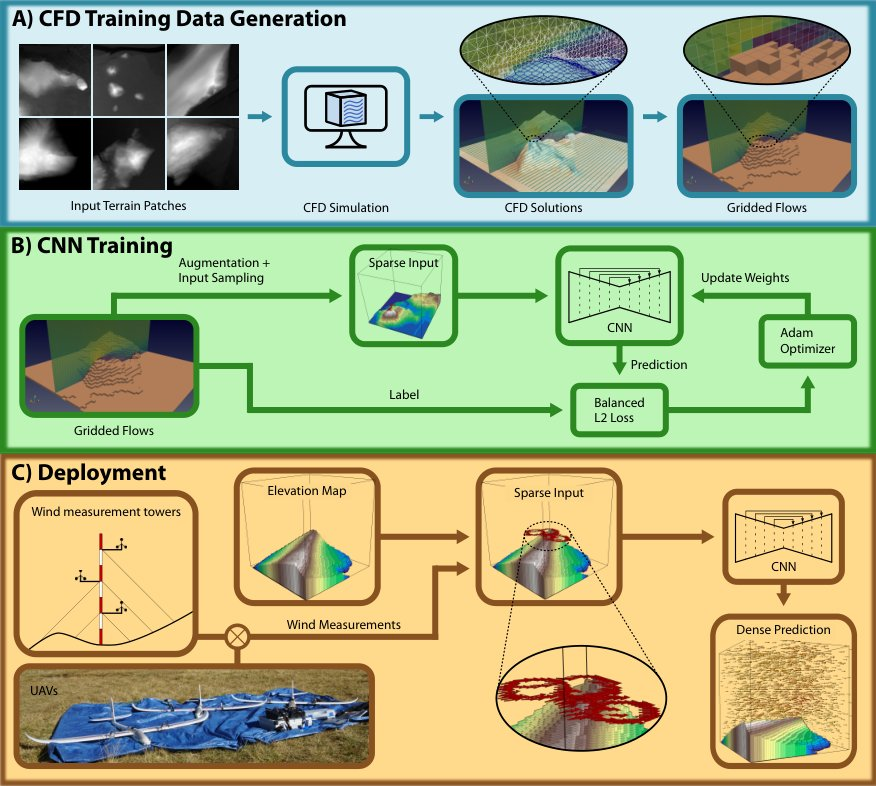
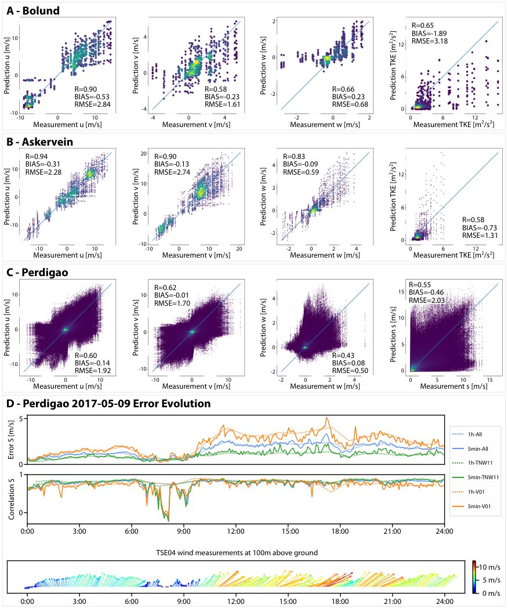
做了什么：只用 CFD 合成数据（563 个瑞士真实地形块、7,285 个 RANS 流场）训练 U-Net 式 CNN，从稀疏、带噪的机载测风 + 地形预测三维平均风和 TKE；在三个测风塔数据集和多架 UAV 实飞上验证，能在机载算力上实时运行。
我们这边：官方数据 235.5 GB 已下载并逐字节校验。官方没有发布训练好的权重，按论文设置写好了训练和评测脚本（Adam、lr 1e-5、3000 epoch、每 700 epoch ×0.25）。在 GeoWind 上留一街区训练的核心网络已作为稀疏融合 baseline 跑过（§4 表 2）。
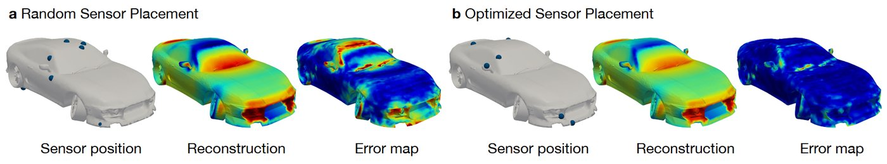
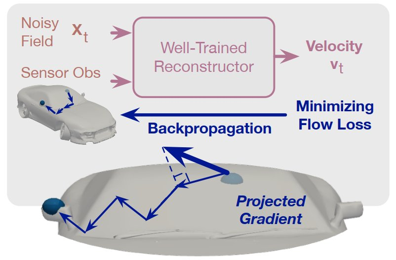
做了什么：两阶段框架：先训练 flow-based 生成式重建模型，再用投影梯度下降在空间约束下优化传感器位置；作者证明两者的训练目标与经典方差最小化一致，并报告在三个基准上重建精度相对提升 49%。
对我们：唯一把“选点 + 重建”联合优化的顶会工作，正对 §9 主线 ②。差别在目标：PhySense 优化重建误差，我们要优化路线排序。代码、环境、GPU smoke（12.75M 参数）已就位，还没在 GeoWind 上训练。
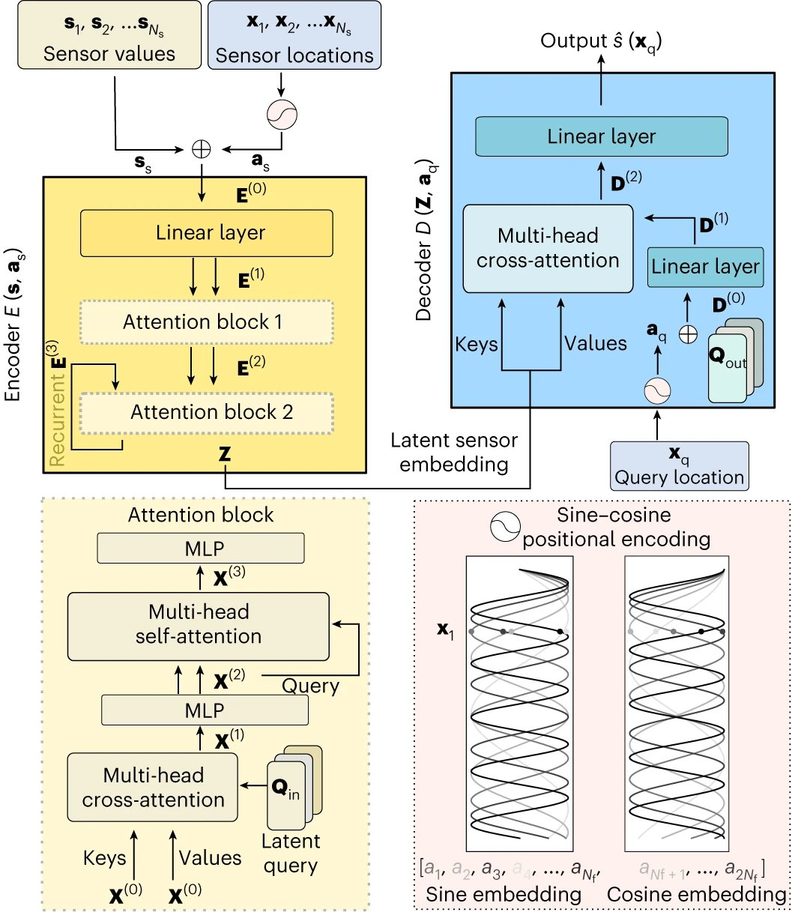
做了什么：Perceiver-IO 式编码器把稀疏传感器读数压到固定大小的隐变量，解码器按坐标查询全场，计算量与域大小解耦，可用于很大的 n 维场。仓库还带“differentiable walk”扩展，训练时用反向传播移动传感器位置（MLST 2024）。
对我们：按坐标查询的接口很适合“沿航线查询风”；参数量很小（smoke 0.05M）。作为选点 + 重建的第二个顶刊 baseline。
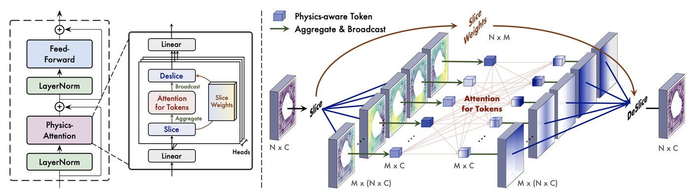
做了什么：复杂度随网格点数线性增长，适合一般几何上的大规模 PDE；在翼型、汽车气动等基准上是强 baseline。
对我们：“几何 → 风场”的 backbone 候选，可直接替换 FNO；3D 配置的 GPU smoke 已通过（0.48M 参数）。
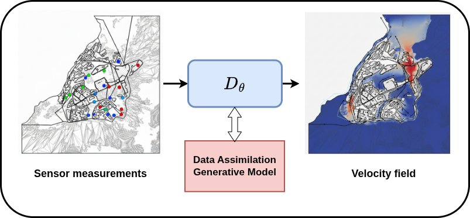
做了什么：在非结构网格上用多尺度图扩散模型学习城市几何先验，把 classifier-free guidance 当作传感器后验约束，支持固定传感器和轨迹观测；相对 GNN 和降阶同化，RRMSE 降 25–57%。
对我们：和我们最接近的“城市 + 稀疏观测 + 生成式”顶会工作。作者数据不公开，仓库没有 LICENSE 文件，需要 JAX 环境；只能引用其数字，或在我们的数据上重训。
GINO 用 SDF + 图神经算子把不规则几何映射到规则网格，再接 FNO，面向大规模 3D（汽车气动）。GeoWind2Plan 本身就是 3D FNO。
我们：自实现的 FNO3D（8.4M）已按留一街区训练进主表；官方库 FNO3D（1.32M）和 GINO（0.71M）smoke 通过。
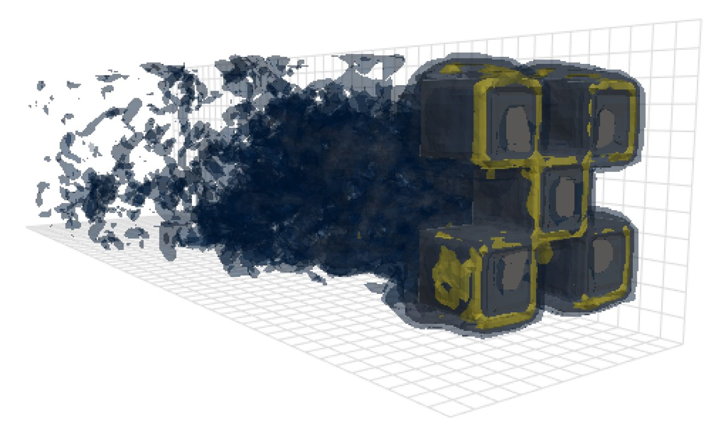
用扩散模型直接生成绕物体的 3D 湍流快照。对我们：只有需要“风场集合 / 不确定性”时才用（主线 ③）。
生成式模型做湍流超分辨、预测和稀疏流场重建。对我们：与 TurbDiff 同属生成式不确定性来源；仓库自带约 1.5 GB 示例数据，环境未建。
做了什么：用 JAX 实现 IPOPT 风格的内点法，在 GPU 上同时解大量小规模 NLP；spineax 提供 cuDSS 稀疏线性求解。作者在四旋翼 NMPC 基准上报告吞吐最高为 IPOPT 的 32.85 倍。
对我们：P0。直接针对“预测风场下 IPOPT 0% 收敛 + CPU 吞吐瓶颈”；我们的问题正好是“任务 × 初值 × 风场”的大批量小 NLP。需要 JAX + cuDSS 环境（未建）。
这些工作和我们的问题很近，但目前只能作为相关工作讨论，不能当顶会 baseline。
| 工作 | 做了什么 | 代码 |
|---|---|---|
| Caltech 风洞规划 arXiv 2608.10309 | 几何 → 风速 + TKE → 体积“飞行难度场”，风扇阵列风洞实飞 | 无 |
| WESPR 2603.09194，作者声明 IROS 2026 | 相机建图 → FluidX3D 现场算风 → 风代价规划，Crazyflie 实飞 | 无 |
| Sculpt / UrbanWindFlow arXiv 2610.07033 | 嵌套势函数保证无散、壁面无穿透的 3D 城市风 | 无 |
| WindINR arXiv 2605.09511 | 隐式神经场 + 只更新潜变量吸收稀疏观测 | 无 |
| WinDiNet arXiv 2603.21210 | 微调视频扩散模型做 2D 城市风，可微反优化建筑布局 | 有（2D） |
| Diff-SPORT arXiv 2506.00214 | 城市湍流的扩散式选点 + 重建 | 有（MIT） |
| Folk et al. wind_aware_ros RA-L 2024 / ICRA 2025 | 机载测风 → 局部风场 → MPPI 实时规划（ROS） | 有（MIT） |
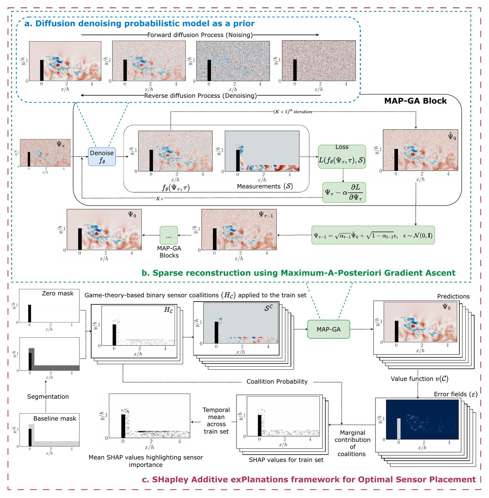
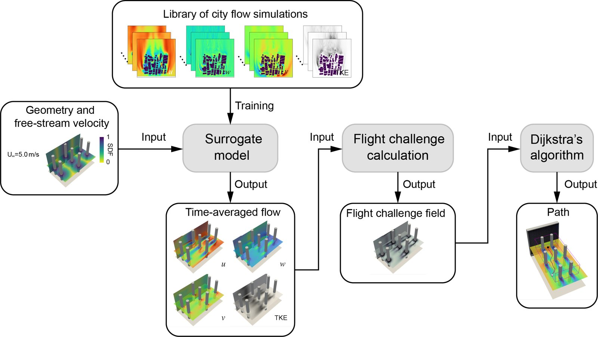
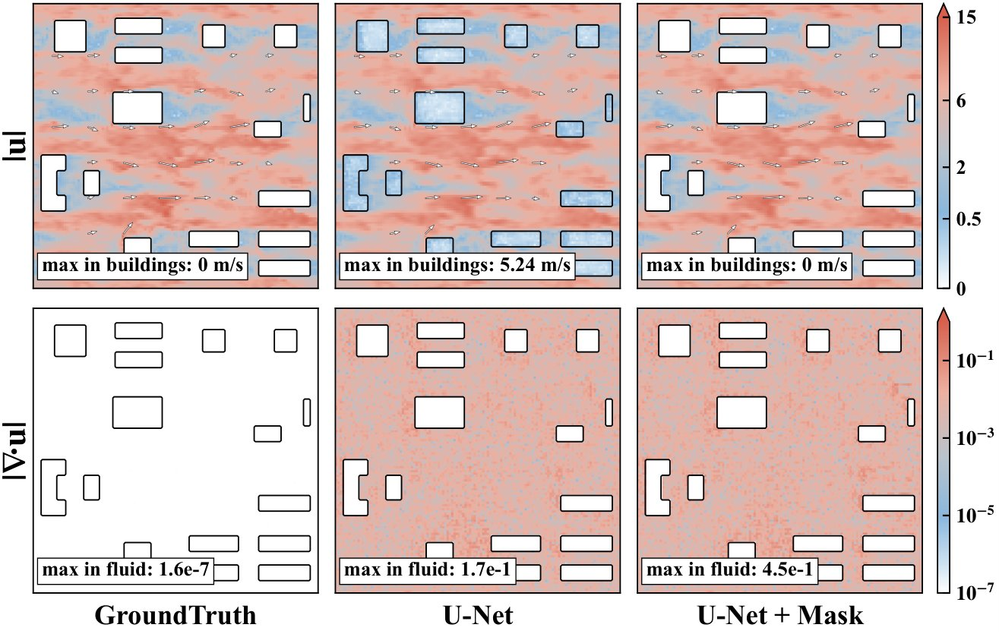
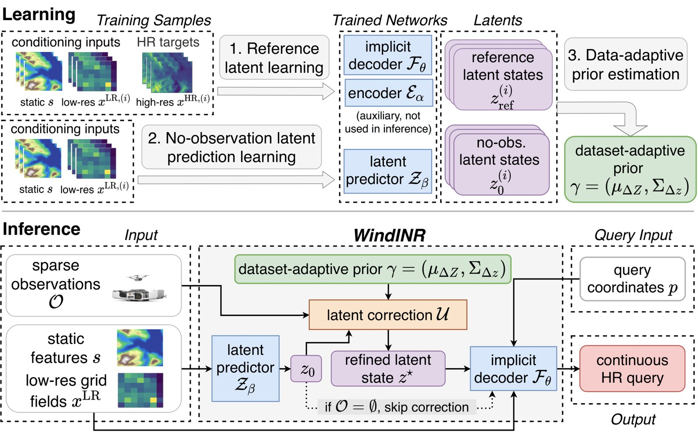
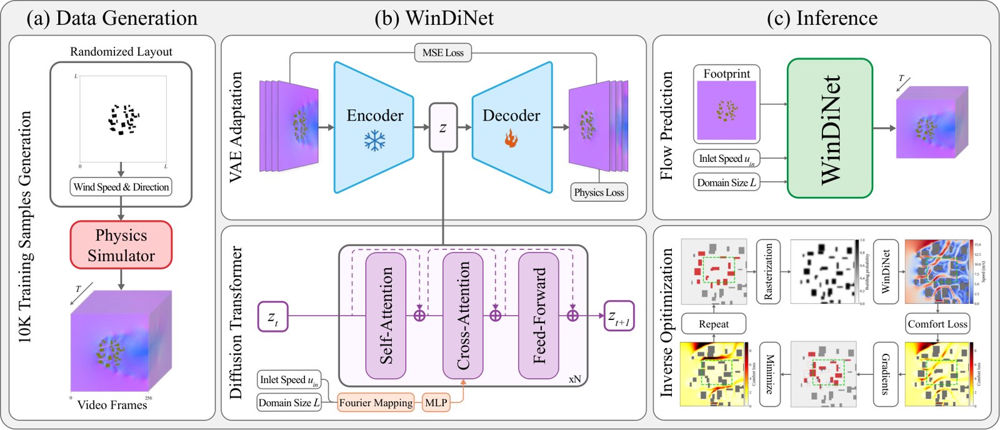
配图来自各论文 arXiv HTML 版：Sculpt、WindINR、WinDiNet 为 CC BY 4.0，Caltech 为 CC BY-NC-ND 4.0（原图未改动，只缩放）。WESPR 的 arXiv 许可没有授予再发布权，公开版不放它的配图。
共同点：LLM 只生成程序、代价函数或工具调用，由可执行的评估器打分并迭代，不直接输出连续数值结果。这正是我们给 Qwen 的定位：它不出轨迹，只写“选点 / 修复 / 代价”程序，或者做“先测风还是直接飞”的决策。
LLM 提出程序变体，自动评估器打分，岛模型进化；发现了 cap set 新构造和更好的装箱启发式。
用法：进化“选点采集函数”，评估器 = 我们的可信评测。
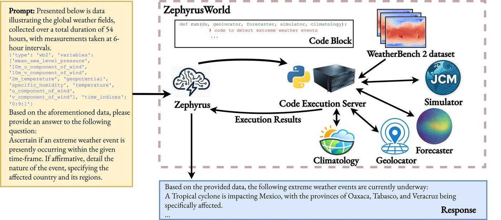
LLM agent 在气象工具环境（WeatherBench 2）里写代码、执行、观察、迭代。用法：Qwen 调用风场 / 规划工具的 agent 框架参照。
LLM 写代码组合 3D value map，交给运动规划器执行。用法：“自然语言约束 → 3D 代价场 → 规划器”的 demo 形式。
ReEvo：反思式进化，LLM 当超启发式；EoH：“思想 + 代码”共同进化。用法：进化规划器的修复 / 初值启发式。
| 项目 | GeoWind2Plan（我们的主协议沿用） | WindSeer 仓库自带的规划基准 |
|---|---|---|
| 场景与任务 | 城市街区；起终点高度 75 m，飞行带 30–120 m；每个街区用同一个随机种子抽任务 | 自然地形上的起终点 |
| 规划 | 每种规划风 10 个 RRT 初值，每个初值做一次能耗最优的轨迹优化（CasADi + IPOPT） | OMPL RRT*，时间最优，空速 15 m/s |
| 选线 | 每种方法只用自己的规划风，在 10 个候选里选能耗最低的一条（论文式 38） | — |
| 约束 | 净空 10 m，空速 ≤ 20 m/s，加速度 ≤ 3 m/s²，推力 ≤ 100 N | — |
| 评估 | 在 CFD 风中回放；能耗 Wh/km = 焦耳 ÷ 3600 ÷ 起终点直线距离（km） | 执行是否有效；执行代价 ÷ 用参考风规划时的代价 |
| 分组与指标 | 按任务方向与来流的夹角 ψ 分组：顺风 ψ ≤ 45° 或 ≥ 315°，逆风 135–225°，其余为侧风。节能率 = (A − O) / A，回收率 = (A − O) / (A − G)；A、O、G 分别是不用风、方法、CFD 规划航线的能耗 | 有效率、归一化执行代价 |
我们的可信评测（3.1）只在这个任务上加了 GPU 修复和严格检查，任务定义不变。WindSeer 的规划基准是地形上的时间最优问题，和节能任务不同，只作参考。闭环测风、可飞空域判定、多点巡检等任务目前都没有现成协议，候选见 §11.1。
| 数据与任务规格（GeoWind2Plan 仓库 commit 5d7fc77） | |
|---|---|
| 街区 | A–D 网格 300×61×300，E 750×61×750；间距 (4, 1.5, 4) m |
| 来流 | 沿 +axis2；A 有 2 / 4 / 8 m/s，B–E 只有 4 m/s |
| 任务 | 飞行带 30–120 m；官方 256 个 / 配置，我们的可信评测 64 个 / 街区（同 seed） |
| 规划 | 每任务每种风 10 个 RRT 初值 → CasADi + IPOPT；CPU 16 进程，7 个配置约 4 小时 |
| 评估 | 所有路线在 CFD 风中回放能耗（Wh/km） |
| 指标定义（全页统一） | |
|---|---|
| 严格通过率 | 通过 5 项严格检查的候选占比 |
| 回收率 | (E不用风 − E方法) / (E不用风 − ECFD)，在所有方法都有有效路线的“共同任务”上按能耗求和 |
| 与 CFD 差距 | 同一共同任务集上，方法能耗相对 CFD 规划能耗的增量 |
| 重排 regret | 在固定候选池里按某个风场选路线：所选候选的 CFD 能耗 / 池内最低 CFD 能耗 − 1 |
| 风场 RMSE | SDF ≥ 10 m 网格上按步长 (4, 3, 4) 抽样的向量 RMSE（m/s） |
| 项目 | 内容 |
|---|---|
| 规模 | A–D 每街区 64 任务 × 3 个 seed，E 16 任务 × 2 个 seed（A–E 合计 800 个“任务 × seed”）；另做 A / 8 m/s（180 个） |
| WindSeer 核心网络 | 官方 ModelEDNN3D，在 GeoWind 上按留一街区训练 6000 步；不是官方完整训练的 WindSeer（见 §3.3） |
| 决策 oracle | 贪心选点，用 CFD 真值评估每个候选点对 regret 的影响；在 120 个候选点子集上贪心，作为可改进空间的参考，不是严格上界 |
| 环节 | 论文设置 | 我们的脚本 | 状态 |
|---|---|---|---|
| 训练 | Adam，lr 1e-5，每 700 epoch ×0.25，3000 epoch，scaled MSE；轨迹输入 3–500 格，噪声和偏置增强 | 训练脚本：论文完整设置，可缩短 epoch、可断点续训，显存上限 13 GB；网络深度 / 宽度和 batch 按仓库示例配置（论文未给，属假设） | 🔄 未启动（按要求暂缓） |
| CFD 测试 | test 集速度 / TKE 相对误差 | 评测脚本调用官方的 CFD 测试集评估 | 🔄 脚本就绪；测试集 10-29 晚到齐，还没实跑 |
| 测风塔 | Askervein / Bolund / Perdigão，遍历每个输入测风塔 | 评测脚本调用官方的测风塔评估，遍历每个输入测风塔 | ✅ 10-29 用随机权重试跑通过（未保留输出） |
| 数据校验 | — | 只读校验脚本（MD5 / SHA1 + HDF5 结构） | ✅ 10/10 + 6/6 |
| # | 规划风 | 训练数据 / 输入 | 性质 | IPOPT 收敛 | 严格通过 原始 → 修复后 | 风场 RMSE (m/s) | 固定池 regret (%) | 重规划回收率 | 状态 |
|---|---|---|---|---|---|---|---|---|---|
| 1 | CFD 参考风 | CFD 真值 | 上界 | 38 / 3199 | 8.7% → 98.1% | 0 | 不在可部署池 | 100%（定义） | ✅ |
| 2 | GeoWind2Plan 3D FNO | 作者预计算预测（训练数据比我们多） | 主 baseline | 0 / 3199 | 4.6% → 95.6% | 0.735–0.822 | 0.33–0.63 | 76.8–86.0% | ✅ |
| 3 | Feilian UNet3D（三通道输出） | 留一街区：4 个街区 | 学习型 | 0 / 3199 | 11.2% → 92.7% | 1.074–1.377 | 0.63–0.95 | 73.6–85.7% | ✅ |
| 4 | FNO3D（自实现，8.4M） | 留一街区：4 个街区 | 学习型 | 0 / 3199 | 7.7% → 89.7% | 1.201–1.417 | 0.58–1.13 | 69.2–81.8% | ✅ |
| 5 | 高度剖面 | 来流对数剖面 | 弱先验 | 619 / 3199 | 10.3% → 61.5% | 2.185–2.492 | 1.23–2.26 | 43.4–73.4% | ✅ |
| 6 | 不用风 | 零风 | 下界 | 2840 / 3199 | 10.0% → 53.2% | — | 3.90–4.48 | 0%（定义） | ✅ |
| 7 | WindSeer（官方完整训练） | ETH 地形 CFD，7,285 个流场 | 跨域迁移 | 待训练后接入：先在 ETH 测试集复现论文数字，再迁移到 GeoWind 街区 | 🔄 数据就绪 | ||||
| 8 | Transolver / GINO | 留一街区：4 个街区 | 几何 → 风场 backbone | 与 #3、#4 同协议；GPU smoke 已通过 | ❌ 建议补（P1） | ||||
| 9 | Ours：决策导向风场 + GPU 批量规划器 | 同 #3、#4 + 第二套数据 | 主方法 | 目标 ≥ 80% | — | 不明显变差 | 低于 #2 | 目标比 #2 高 ≥ 3 个百分点 | 🔄 设计中（§9） |
区间是 A–E 五个街区的最小值–最大值。固定池 = GW2P、剖面、不用风规划并修复后通过严格检查的候选；64/64 个任务池内都有 ≥ 2 个有效候选。回收率在共同任务上计算（A 55、B 46、C 41、D 50、E 39 个），共同任务数由“不用风”决定，因为它常在 CFD 风下空速超限。UNet / FNO 只用 4 个街区训练，与 GeoWind2Plan 不是同等数据的比较。
格内数字 = 固定池重排 regret（%，越低越好），小字 = 路线节点风速 RMSE（m/s）。绿色 = 比不加探针的先验好，深绿 = 好 15% 以上，红色 = 比先验差。
| A–E，4 m/s，K = 32（800 个任务 × seed；先验 0.477 / 0.85） | |||||
|---|---|---|---|---|---|
| 重建 \ 选点 | 随机 | FPS 覆盖 | 沿路线均匀 | 集合方差 | 最大误差 oracle |
| 不修正 | 0.4770.85 | 0.4770.85 | 0.4770.85 | 0.4770.85 | 0.4770.85 |
| 常数残差 | 0.4830.85 | 0.4800.84 | 0.4890.83 | 0.4711.13 | 0.4761.97 |
| IDW | 0.4150.79 | 0.4360.81 | 0.2990.71 | 0.4621.12 | 0.6852.15 |
| GP | 0.4110.79 | 0.4220.82 | 0.3030.72 | 0.4290.84 | 0.5190.94 |
| WindSeer 核心 LOBO 6000 步 | 0.4910.86 | 0.4910.86 | 0.4970.86 | 0.4910.86 | 0.4910.86 |
| PhySense / Senseiver | ❌ 待接入（同协议，P0 / P1） | ||||
| A，8 m/s，K = 32（180 个；先验 0.438 / 1.66） | |||||
|---|---|---|---|---|---|
| 重建 \ 选点 | 随机 | FPS 覆盖 | 沿路线均匀 | 集合方差 | 最大误差 oracle |
| 不修正 | 0.4381.66 | 0.4381.66 | 0.4381.66 | 0.4381.66 | 0.4381.66 |
| 常数残差 | 0.4751.68 | 0.4291.67 | 0.4271.64 | 0.5692.55 | 0.9406.75 |
| IDW | 0.4691.62 | 0.5811.64 | 0.1871.26 | 0.7062.44 | 1.2186.52 |
| GP | 0.4331.60 | 0.5231.62 | 0.2081.29 | 0.5791.65 | 1.1111.89 |
| WindSeer 核心 | 未跑（8 m/s 只做了解析重建器） | ||||
| 预算扫描：regret（%）随 K 的变化 | |||
|---|---|---|---|
| 组合 | K = 8 | K = 16 | K = 32 |
| A–E：IDW + 沿路线均匀（先验 0.477） | 0.411 | 0.383 | 0.299 |
| A–E：GP + 沿路线均匀 | 0.419 | 0.358 | 0.303 |
| A–E：GP + 随机 | 0.461 | 0.447 | 0.411 |
| A / 8 m/s：IDW + 沿路线均匀（先验 0.438） | 0.632 | 0.259 | 0.187 |
| A / 8 m/s：GP + 沿路线均匀 | 0.456 | 0.358 | 0.208 |
| 方法 | 会议 / 期刊 | 任务 | 代码 @commit | 许可 | 权重 | 数据 | 环境 | GPU smoke | 在我们协议上 | 优先级 |
|---|---|---|---|---|---|---|---|---|---|---|
| WindSeer | Nat. Commun. 2024 | 稀疏测风 + 地形 → 3D 风 / TKE | ✅ 45111de | BSD-3 | ❌ 未发布 | ✅ 235.5 GB 已校验 | ✅ 已建 | ✅ 5.54M | 🔄 LOBO 核心版已跑；官方完整训练待启动 | P0 |
| PhySense | NeurIPS 2025 Oral | 传感器布置优化 + 生成式重建 | ✅ 69fa5cc | MIT | 未核查 | 作者基准未下载 | ✅ 已建 | ✅ 12.75M | ❌ 未训练 | P0 |
| Senseiver | Nat. Mach. Intell. 2023 | 稀疏观测 → 全场（注意力） | ✅ e443eb0 | BSD-3 | — | Zenodo（未下载） | ✅ 已建 | ✅ 0.05M | ❌ 未训练 | P1 |
| Transolver | ICML 2024 Spotlight | 一般几何 PDE 求解 | ✅ 75e0f67 | MIT | — | — | ✅ 已建 | ✅ 0.48M（3D） | ❌ 未训练 | P1 |
| FNO / GINO（neuraloperator） | ICLR 2021 / NeurIPS 2023 | 几何 → 场 | ✅ a6648ee | MIT | — | — | ✅ 已建 | ✅ 1.32M / 0.71M | 🔄 自实现 FNO3D 已进主表；GINO 未训练 | P1 |
| GenDA | ICML 2026 | 城市扩散同化 | ✅ 7bd691b | 无 LICENSE | — | ❌ 不公开 | ❌ 需 JAX | ❌ | ❌ | P2 |
| TurbDiff（From Zero to Turbulence） | ICLR 2024 | 3D 湍流生成 | ✅ f1f88aa | MIT | 未核查 | 未核查 | ❌ 未建 | ❌ | ❌ | P2 |
| Gen4Turbulence | Nat. Commun.（README 称已接收） | 生成式超分 / 稀疏重建 | ✅ 8af0a7b | MIT | 未核查 | 仓库自带 1.5 GB | ❌ 未建 | ❌ | ❌ | P2 |
| jaxipm + spineax | arXiv 2606.26341 | GPU 批量内点法 / cuDSS | ✅ 3e6d2d2 / 97dae03 | MIT | — | — | ❌ 需 JAX + cuDSS | ❌ | ❌ | P0 |
| Feilian-3D UNet3D 单独部署 | Zenodo 归档（无正式论文） | 建筑 mask → 风速 | ✅ | 见归档 | ❌ | ❌ 539 样本未交付 | ✅ 已建 | ✅ 1.36M | ✅ 改三通道后 LOBO 进主表 | — |
| Diff-SPORT | arXiv 2506.00214 | 城市选点 + 扩散重建 | ✅ 6df1d1b | MIT | 未核查 | 未核查 | ❌ | ❌ | ❌ | P2 |
| WinDiNet | arXiv 2603.21210 | 视频扩散做 2D 风 | ✅ cdc60ac | Apache-2.0 | HF 约 9.9 GB 未下载 | 作者样例 5 个 | ❌ | ❌ | 2D 时变，不同题 | — |
| wind_aware_ros（Folk） | RA-L 2024 / ICRA 2025 | 机载测风 + MPPI | ✅ 958fa9f | MIT | — | — | ❌ ROS | ❌ | ❌ | P2 参考 |
所有仓库都是官方 GitHub 浅克隆，未修改上游代码，commit 与许可已逐个记录。GPU smoke 只用随机张量验证安装和前向 / 反向，不代表精度。Caltech、WESPR、Sculpt、WindINR 没有公开代码，见 §2.3。
| 框架 | 会议 | 机制 | 在我们问题里做什么 | 代码 @commit | 许可 | 状态 |
|---|---|---|---|---|---|---|
| OpenEvolve | AlphaEvolve 开源实现 | 多岛进化 + LLM 集成 + 评估级联 | 方向 A 的主框架：进化选点 / 修复程序，接本地 Qwen | bcf63da | Apache-2.0 | 🔄 代码就位，未接评估器 |
| FunSearch | Nature 2023 | LLM 改写程序 + 自动评估 + 岛模型 | 方向 A 的方法论参照 | cc53f27 | Apache-2.0 | 🔄 仅参考实现 |
| ShinkaEvolve | ICLR 2026 | 样本高效的程序进化 | 评估昂贵（每次需重规划）时的替代框架 | 8adc053 | Apache-2.0 | 🔄 代码就位 |
| ReEvo | NeurIPS 2024 | 反思式进化，LLM 当超启发式 | 进化规划器的修复 / 初值启发式 | 6dce182 | MIT | 🔄 代码就位 |
| EoH | ICML 2024 | “思想 + 代码”共同进化 | 同上，作为对照 | 4725457 | MIT | 🔄 代码就位 |
| Eureka | ICLR 2024 | LLM 写奖励代码，RL 结果做反馈 | LLM 写风感知代价函数 | 9eee428 | MIT | 🔄 代码就位 |
| LLM-SR | ICLR 2025 Oral | LLM 提方程骨架 + 数值拟合 | 发现“风 → 能耗”代理或风场修正律 | 41c2123 | MIT | 🔄 代码就位 |
| LLAMBO | ICLR 2024 | LLM 增强贝叶斯优化 | 选点的 BO 先验（样本少时） | 196fe23 | MIT | 🔄 代码就位 |
| VoxPoser | CoRL 2023 | LLM 组合 3D value map → 规划器 | 方向 B 的 demo 形式：语言约束 → 3D 代价场 | e3a4c9e | MIT | 🔄 代码就位 |
| Zephyrus | ICLR 2026 | LLM agent 调用气象工具写代码 | 方向 B：Qwen 调用风场 / 选点 / 规划工具 | e58207b | MIT | 🔄 代码就位 |
全部数字来自我们的实验结果文件。R1 是官方原始输出，没有门控；R2–R6 都建立在 GPU 修复 + 严格检查之后，两类口径不能逐格互比。
| 配置 | 原始能耗 vs 不用风 CFD / GW2P / 剖面 | 单独通过净空 CFD / GW2P / 剖面 / 不用风 | 四方法共同通过 | 共同通过子集上 vs CFD GW2P / 剖面 / 不用风 |
|---|---|---|---|---|
| A / 2 m/s | −2.36% / −2.06% / −1.05% | 15 / 21 / 15 / 15 | 5 | +0.38% / +0.58% / +0.87% |
| A / 4 m/s | −6.90% / −5.51% / −2.91% | 20 / 31 / 12 / 15 | 5 | +1.62% / +2.77% / +4.55% |
| A / 8 m/s | −18.93% / −14.66% / −9.02% | 22 / 48 / 10 / 15 | 3 | +10.69% / +6.78% / +21.92% |
| B / 4 m/s | −8.49% / −6.68% / −4.43% | 76 / 116 / 36 / 60 | 21 | +0.90% / +2.61% / +7.07% |
| C / 4 m/s | −9.69% / −8.18% / −6.01% | 73 / 86 / 62 / 70 | 24 | +0.78% / +2.10% / +9.68% |
| D / 4 m/s | −8.82% / −7.09% / −4.93% | 52 / 74 / 34 / 30 | 8 | +0.92% / +1.99% / +7.40% |
| E / 4 m/s | −11.35% / −9.52% / −8.47% | 51 / 81 / 55 / 68 | 19 | +0.50% / +1.61% / +8.95% |
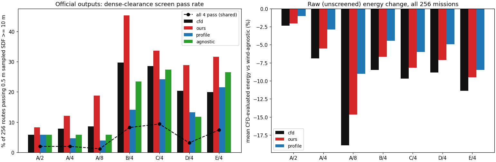
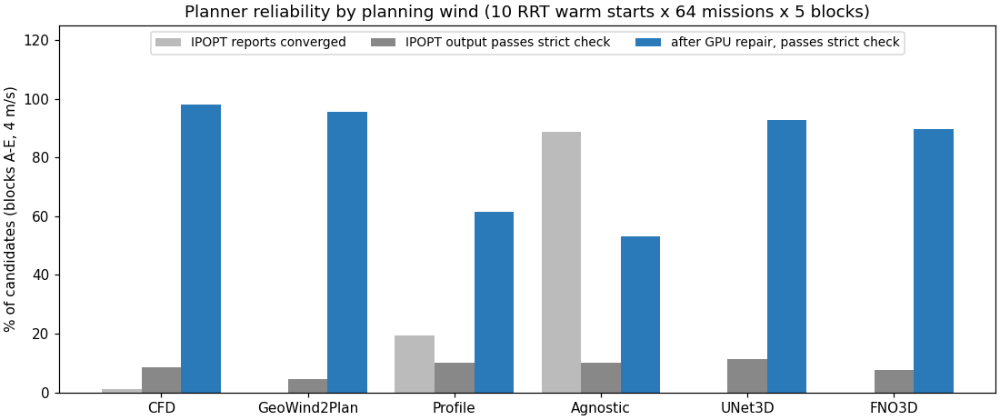
| 规划风 | IPOPT 收敛 | 原始严格通过 | 修复后严格通过 |
|---|---|---|---|
| CFD | 1.2% | 8.7% | 98.1% |
| GeoWind2Plan | 0% | 4.6% | 95.6% |
| UNet3D（LOBO） | 0% | 11.2% | 92.7% |
| FNO3D（LOBO） | 0% | 7.7% | 89.7% |
| 剖面 | 19.4% | 10.3% | 61.5% |
| 不用风 | 88.8% | 10.0% | 53.2% |
| 街区 | 向量 RMSE（m/s） | 固定池重排 regret（%） | |||||||
|---|---|---|---|---|---|---|---|---|---|
| GW2P | UNet | FNO | 剖面 | GW2P | UNet | FNO | 剖面 | 不用风 | |
| A | 0.795 | 1.377 | 1.417 | 2.185 | 0.33 | 0.63 | 0.62 | 2.03 | 4.48 |
| B | 0.777 | 1.291 | 1.381 | 2.358 | 0.45 | 0.95 | 1.13 | 2.26 | 4.16 |
| C | 0.758 | 1.074 | 1.201 | 2.492 | 0.63 | 0.76 | 0.92 | 2.15 | 4.31 |
| D | 0.822 | 1.153 | 1.282 | 2.356 | 0.49 | 0.71 | 0.59 | 1.87 | 4.20 |
| E | 0.735 | 1.186 | 1.201 | 2.470 | 0.39 | 0.68 | 0.58 | 1.23 | 3.90 |
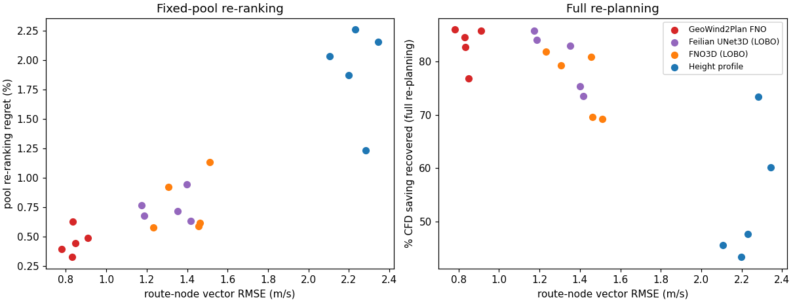
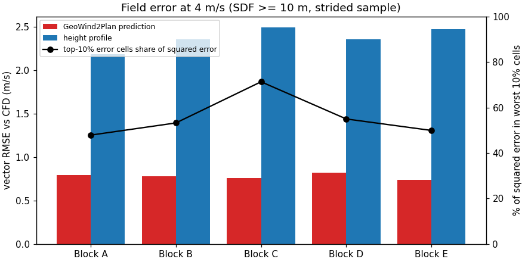
| 街区（共同任务） | CFD vs 不用风 | GW2P 回收率 / 与 CFD 差距 | UNet3D | FNO3D | 剖面 |
|---|---|---|---|---|---|
| A (55) | −7.93% | 84.5% / +1.37% | 73.6% / +2.40% | 69.6% / +2.69% | 45.7% / +4.81% |
| B (46) | −7.17% | 76.8% / +1.89% | 75.3% / +2.02% | 69.2% / +2.53% | 47.7% / +4.23% |
| C (41) | −7.56% | 82.7% / +1.54% | 85.7% / +1.26% | 79.3% / +1.87% | 60.1% / +3.52% |
| D (50) | −9.67% | 85.8% / +1.68% | 82.9% / +2.04% | 80.9% / +2.32% | 43.4% / +6.30% |
| E (39) | −7.55% | 86.0% / +1.13% | 84.0% / +1.33% | 81.8% / +1.62% | 73.4% / +2.23% |
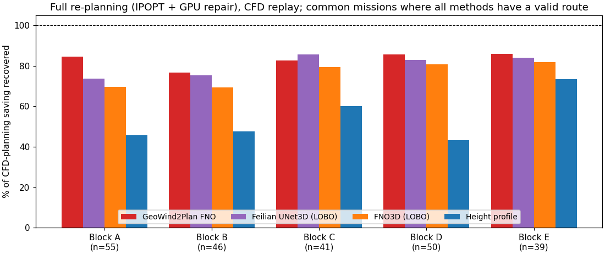
A–E 合并，用 R4 的 231 个共同任务（严格检查后所有方法都有有效航线）。能耗是 CFD 风中回放的 Wh/km，先在组内取平均，再算节能率和回收率；括号里是论文报告值。由已有的 R4 结果文件重新汇总，没有重跑规划。
| 分组 | 任务数 | 平均能耗 Wh/km CFD / GW2P / 不用风 | CFD 节能率 | GW2P 节能率 （论文） | GW2P 回收率 （论文） | UNet3D 回收率 | FNO3D 回收率 | 剖面 回收率 |
|---|---|---|---|---|---|---|---|---|
| 顺风 | 60 | 9.28 / 9.40 / 10.18 | 8.9% | 7.7%（6.9%） | 86.6%（87.9%） | 82.7% | 76.1% | 67.5% |
| 逆风 | 31 | 13.94 / 14.31 / 16.61 | 16.0% | 13.8%（12.7%） | 86.3%（85.7%） | 83.9% | 79.1% | 54.1% |
| 侧风 | 140 | 12.01 / 12.18 / 12.88 | 6.7% | 5.4%（4.5%） | 80.0%（75.0%） | 76.2% | 74.1% | 42.8% |
| 合计 | 231 | 11.56 / 11.74 / 12.68 | 8.8% | 7.4% | 83.4% | 80.0% | 76.1% | 51.6% |
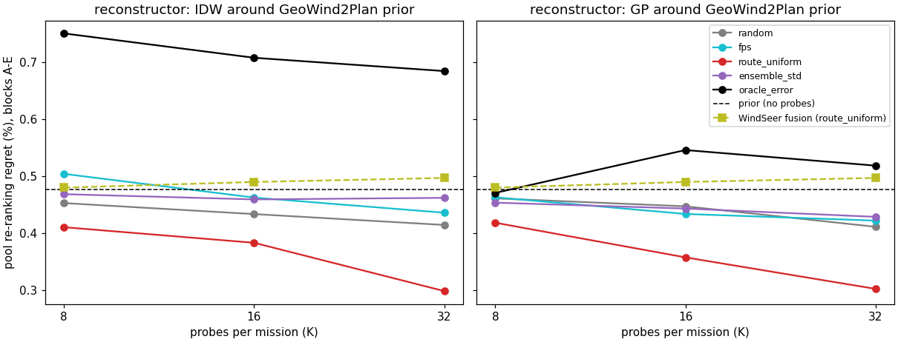
| K = 32，A–E | regret | 相对先验 | 变好 / 变差的任务 |
|---|---|---|---|
| IDW + 沿路线均匀 | 0.299% | −37% | 18% / 7% |
| GP + 沿路线均匀 | 0.303% | −36% | 22% / 11% |
| GP + 随机 | 0.411% | −14% | 15% / 9% |
| IDW + FPS 覆盖 | 0.436% | −9% | 13% / 7% |
| IDW + 集合方差 | 0.462% | −3% | 9% / 7% |
| IDW + 最大误差（oracle） | 0.685% | +44% | 20% / 23% |
| WindSeer 核心 + 沿路线均匀 | 0.497% | +4% | 4% / 4% |
| 决策 oracle（K = 16，每街区 24 个任务，贪心，用 CFD） | 先验 regret（%） | oracle regret（%） |
|---|---|---|
| A / 4 m/s | 0.433 | 0.405 |
| B / 4 m/s | 0.242 | 0.206 |
| C / 4 m/s | 0.746 | 0.327 |
| D / 4 m/s | 0.272 | 0.272 |
| A / 8 m/s | 0.493 | 0.248 |
E 单独看不稳定：16 个任务上 IDW + 沿路线均匀（K=32）的 regret 是 0.691%，先验 0.595%，反而变差。4 m/s 下固定池重排的可改进空间本身只有零点几个百分点。
| 街区 A | 2 m/s | 4 m/s | 8 m/s |
|---|---|---|---|
| GW2P 路线节点风速 RMSE（m/s，按风速比缩放） | 0.39 | 0.83 | 1.60 |
| 完整重规划：GW2P 与 CFD 规划的能耗差距 | +0.39% | +1.37% | +2.48% |
| GW2P 回收率 | 90% | 84% | 84% |
| 修复后通过严格检查的候选：GW2P vs CFD 规划（/ 640） | 630 vs 631 | 610 vs 616 | 343 vs 612 |
| 其中在 CFD 风下超出空速或推力限制：GW2P vs CFD 规划 | 2 vs 1 | 21 vs 3 | 293 vs 0 |
| 其中途中超限（只看通过与风无关检查的候选，§10.1）：GW2P vs CFD 规划 | 0 vs 0 | 3 vs 0 | 223 vs 0 |
| 有有效路线的任务（/ 64）：CFD · GW2P · 剖面 · 不用风 | 64 · 64 · 64 · 63 | 64 · 64 · 60 · 55 | 64 · 62 · 44 · 25 |
| 稀疏观测 regret：IDW + 沿路线均匀，K = 32 | — | A–E 汇总 0.477 → 0.299（−37%） | 0.438 → 0.187（−57%） |
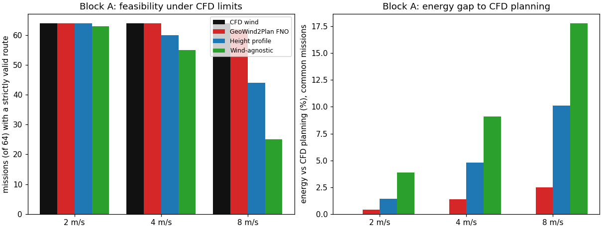
8 m/s 时 46% 的 GW2P 候选在 CFD 风下违反空速或推力限制，这比 2.5% 的能耗差距更关键，是主线 ③（风险约束规划）的依据。
本地渲染= 我们用服务器上已有的数组和规划结果渲染，没有重新规划或跑 CFD；作者发布= 原作者的视频或样例，按其许可引用。
GeoWind2Plan 作者的官网教程视频（CC BY-NC 4.0）没有放进公开版，可在 geowind2plan.com 观看。
| 默认任务：4 m/s、0°，起终点高度 75 m（录屏中的结果） | ||
|---|---|---|
| 规划风 | 能耗（Wh/km，CFD 风中评估） | 独立净空检查 |
| CFD（参考） | 14.67 | 通过 |
| 预测风（GeoWind2Plan 模型） | 14.96 | 通过 |
| 高度剖面 | 15.38 | 通过 |
| 不用风 | 15.97 | 通过 |
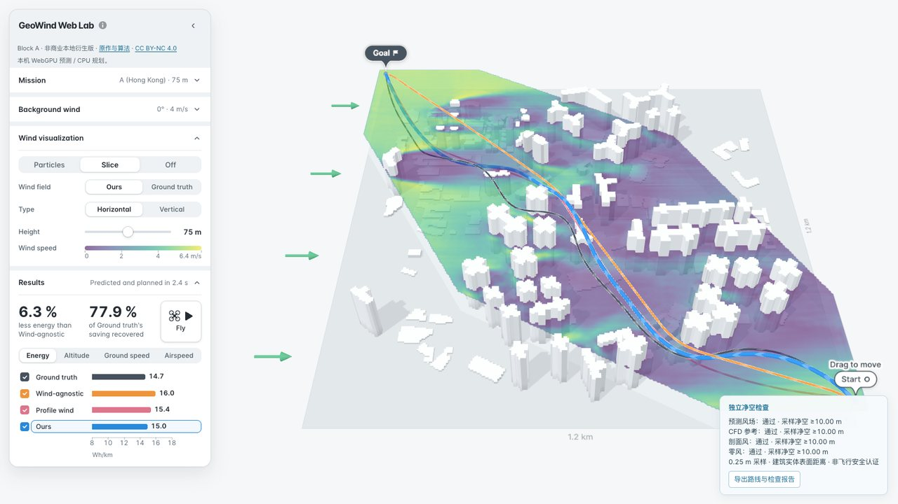
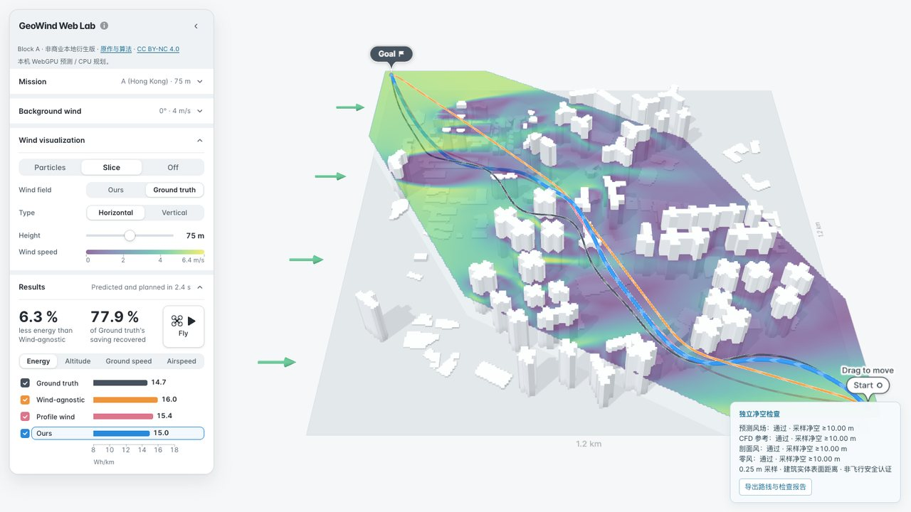
| 自由风向（没有 CFD 真值，能耗在预测风场中评估，不是独立评估） | |||||
|---|---|---|---|---|---|
| 风向 | 风场推理 | 预测风航线（Wh/km） | 高度剖面 | 不用风 | 预测风 vs 不用风 |
| 35° | 2.4 s | 13.50 | 14.14 | 14.33 | −5.8% |
| 90° | 1.9 s | 10.70 | 10.92 | 11.12 | −3.8% |
| 180° | 1.9 s | 10.76 | 10.97 | 11.21 | −4.0% |
| 层 | 数据集 | 规模 / 内容 | 位置 / 获取 | 许可 | 校验 | 注意点 |
|---|---|---|---|---|---|---|
| 已在手 | GeoWind2Plan | 5 个街区 3D3C 平均风 + 几何 + SDF；A 另有 2 / 8 m/s；23 个数组 1.64 GiB | 实验服务器 | CC BY-NC 4.0 | ✅ | 独立工况太少，不能单独支撑泛化结论 |
| WindSeer（ETH） | train 5,373 流场（96×91×91）、val 6,708 / test 4,764 个 64³ 样本（各 1,118 / 794 个流场 × 6 次重采样）；8 个场通道（terrain, ux, uy, uz, turb, p, epsilon, nut）+ 网格间距 ds；Askervein / Bolund / Perdigão 测风塔；UAV 飞行数据；论文补充视频 | 实验服务器，235.5 GB；doi:10.3929/ethz-b-000658323 | CC BY 4.0 | ✅ MD5 + SHA1 10/10，HDF5 6/6 | 自然地形，不是建筑城市；只能做跨域迁移和稀疏观测预训练 | |
| AIJ Case D | 风洞稀疏速度 / TKE，5 个文件 | 已下载（10-28 调研） | CC BY 4.0 | ✅ MD5 | 行人高度，小型物理观测验证 | |
| urbanFlowGen 自生成 | 20 个场景 STL + 60 个 TOML 配置（4 族） | 已生成（10-28） | MIT（工具） | ✅ 重跑哈希一致 | 还没有 CFD 解；主线 ④ 的几何来源 | |
| WinDiNet 作者样例 | 5 个 NPZ，每个 [112, 256, 256] 的 u、v + 建筑 mask | 已下载（10-28） | Apache-2.0 | ✅ | 2D 时变，只作可视化对照 | |
| 可申请 / 待下载 | U3DWind | 5 座城市 720 个 GPU LBM-LES 算例，10 m 分辨率 3D3C + TKE | 20 m 版承诺审稿后开放；10 m 版 >50 TB 需申请 | 待定 | ❌ | 最理想的第二套城市 3D 数据 |
| UrbanTALES | 538 个布局 LES（224 理想 + 314 真实，62 座城市） | 门户 metadata 已取；公开文件只有行人高度的 2D 场（东京 Kasumigaseki 样本已下载核实），3D 速度数组未拿到 | CC BY-NC 4.0 | 🔄 | 真实城市形态泛化；含东京 5 个区域 | |
| PLATEAU 东京 23 区 | 国土交通省的城市建筑三维模型（CityGML v2，约 3.8 GB） | G 空间信息中心，可直接下载 | 免费，可商用 | 未下载 | 只有几何，没有风；到东京路线的第 1 步（§11.2） | |
| Rotterdam（4TU） | 城市 CFD 结果压缩包，约 86 GB | 直连超时 | — | ❌ | 独立城市外部测试候选 | |
| PhySense / Senseiver 原基准 | 各论文自带数据 | Senseiver 在 Zenodo；PhySense 见仓库说明 | — | 未下载 | 只在需要复现原文数字时下载 | |
| 暂不可得 | Feilian-3D 数据 | 539 个 CFD 样本，约 40 GB（3D 标量风速） | Zenodo 归档未包含 | — | ❌ | 缺三分量 |
| UrbanFlow-3K / GenDA 数据 | 3,000 个 2D LBM / Bristol RANS 切片 | Dataverse 下载 403 / 作者不公开 | — | ❌ | 2D；GenDA 只能引用数字 |
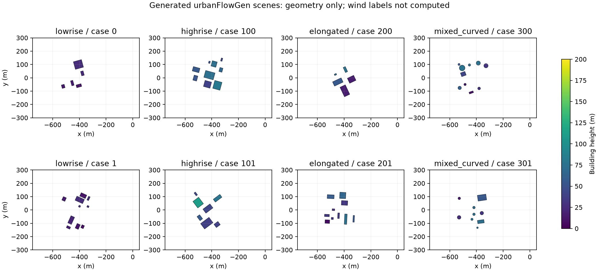
| 街区 | 城市 | 范围 | 最高建筑 | CFD 工况 |
|---|---|---|---|---|
| A | 香港 | 1.2 × 1.2 km | 144 m | 2 / 4 / 8 m/s |
| B | 蒙特利尔 | 1.2 × 1.2 km | 202.5 m | 4 m/s |
| C | 墨尔本 | 1.2 × 1.2 km | 193.5 m | 4 m/s |
| D | 悉尼 | 1.2 × 1.2 km | 240 m | 4 m/s |
| E | 大阪 | 3 × 3 km | 169.5 m | 4 m/s |
| 数据 | 能做 | 不能做 |
|---|---|---|
| GeoWind2Plan | 节能航线规划（§3 主协议）；稀疏测风后重排或重规划；留一街区的跨城市测试 | 新来流方向、时间变化、阵风风险 |
| WindSeer（ETH） | 山地上的稀疏测风重建；仓库自带的时间最优规划基准；预训练 | 城市建筑 |
| WindSeer UAV 飞行数据 | 用 13 次真实飞行（EZG3 / EZG5 / EZG6，Chasseral、Gotthardpass、Oberalppass）检验测风和风场估计 | 城市；规划评测 |
| AIJ Case D | 验证我们自己的 CFD / LBM 求解器（低层街区中的一栋高层，来流 0 / 22.5 / 45°） | 规划（行人高度、范围小） |
| UrbanTALES 东京 5 区 | 行人高度的风速对照 | 飞行高度的三维风 |
| urbanFlowGen、WinDiNet 样例 | 几何来源；2D 可视化对照 | 没有三维流场 |
按证据排序。都是待验证的假设，每条写了依据、最小实验和停止条件；“没看到直接对应的工作”不等于不存在，投稿前需要再做一次新颖性核查。
依据：R3、R4 显示场误差高 40–73% 的 UNet，回收率仍和 GeoWind2Plan 重叠；R2 显示官方 IPOPT 在预测风下 0% 收敛，没法给“决策损失”提供可靠信号。
做法：(a) 规划器：先用平滑插值（三次 B 样条或神经场）验证不收敛的原因，再用 jaxipm 做批量内点法。(b) 学习：能耗模型对风可微，候选池现成（每任务 30–60 条有效候选），损失 = 场损失 + λ · 候选对能耗差的排序损失或 regret 代理，只作用在路线附近。
对照：同一网络只用场损失；GeoWind2Plan；路线邻域加权 MSE（排除“只是加权”的解释）。指标：回收率、重排 regret、CFD 限制违例率、场 RMSE。
继续门槛：规划器在预测风下收敛 ≥ 80%，能耗不劣于“IPOPT + 修复”，吞吐比 16 核 CPU 高一个量级；学习部分在留出街区上回收率稳定提升 ≥ 3 个百分点，且场 RMSE 不明显变差。
适合 NeurIPS / ICLR风险：要和通用 decision-focused learning 拉开差距；依赖主线 ④ 的数据
依据：表 2 中沿路线均匀放点在 A–E 和 8 m/s 都明显优于随机、覆盖、不确定性和最大误差，最大误差点有害；PhySense、Senseiver、WindSeer 都按场误差优化选点或重建，没有按决策优化。
做法：采集函数 = 候选对能耗差 ΔEij 的后验方差下降量（GP 后验 × 沿路线的 ∂E/∂w 线性化），加上 UAV 飞去测量的移动成本；顺序采集，每批探针之后重新规划（闭环），不只是重排。
对照：沿路线均匀（当前最强）、PhySense（NeurIPS 2025 Oral 的选点方法）、Senseiver、决策 oracle。主场景：8 m/s、风向偏转、urbanFlowGen 新形态；4 m/s 只用来检验“先验好时不伤害”。
停止条件：同样 K 下不能比沿路线均匀再降 ≥ 20% 相对 regret，或者完整重规划下收益消失。
适合 CVPR / ICCV：主动感知 + 三维场重建
10-31 的深入分析把这条线列为主线候选：相关工作、任务定义和判定实验见 §10。
依据：R6 中 8 m/s 时 46% 的 GeoWind2Plan 候选在 CFD 风下违反空速 / 推力限制，比 2.5% 的能耗差距更关键。
做法：给预测风一个校准过的误差界（模型集合或 conformal，按路线节点校准），规划时对空速和推力加鲁棒余量，画“能耗 vs 违例率”的 Pareto 曲线。对照：固定余量、保守风（放大 x%）、不加约束。
前提：只有街区 A 有 2 / 8 m/s 的 CFD，校准和测试需要更多工况，依赖主线 ④。
用 GPU LBM（FluidX3D 或可微的 XLB）在 urbanFlowGen 的 20 个场景上算 2–3 个风向 × 2–3 个风速，先做 8 个工况（4 族 × 2 风向）的质量检查；同时申请 U3DWind。没有这套数据，主线 ① 和 ③ 的泛化结论站不住。FluidX3D 等求解器的许可要逐条核对。
WindSeer 的 7,285 个地形流场可以做预训练或跨域测试，但它是自然地形，不能代替城市数据。
| 方向 | Qwen 做什么 | 评估器 / 工具 | 借鉴 | 最小实验 | 停止条件 |
|---|---|---|---|---|---|
| A · 程序搜索 | 写并进化“选点采集函数”和“规划修复 / 初值启发式”的 Python 程序 | §3.2 协议：固定池重排 regret（一批任务一次评估） | FunSearch、OpenEvolve、ShinkaEvolve、ReEvo、EoH（代码已部署） | K = 16 / 32；在 A–D 上进化，E 和 8 m/s 留出；对照沿路线均匀和 PhySense | 留出工况上不比沿路线均匀再降 ≥ 20% |
| B · 决策层 agent（Measure-or-Fly） | 根据任务、预测风和不确定度，决定先测风还是直接飞、测哪里、什么时候重规划 | 风场预测、探针测量、规划器、严格检查器作为工具 | Zephyrus、VoxPoser（代码已部署） | 8 m/s：总能耗 + 测量成本 vs 固定策略 | 不比“总是沿路线均匀测 K 个点”更好 |
| C · 风险校准 | 不确定度超过校准阈值时，选择测量、绕行或请求人工 | 主线 ③ 的 conformal 误差界 | KnowNo（CoRL 2023，用 conformal 校准 LLM 规划器；未部署） | 违例率能否控制在目标水平 | 覆盖率达不到目标 |
Demo 形式（方向 B）：自然语言任务 → Qwen 调用工具 → 三维城市中探针位置和路线的动画，展示方式参考 VoxPoser。
| # | 行动 | 依赖 | 粗估 | 完成标准 |
|---|---|---|---|---|
| 1 | 验证 IPOPT 不收敛的原因：把风和 SDF 换成平滑插值，在 A / 4 m/s 的 64 个任务上重跑 | 无（CPU 即可） | 1–2 天 | 预测风下收敛率明显上升，或排除这个原因 |
| 2 | GPU 批量规划器：建 JAX + cuDSS 环境，接 jaxipm，与 CPU 版逐任务对齐 | 1 | 1–2 周 | 收敛 ≥ 80%，能耗 ≤ IPOPT + 修复，吞吐 ≥ 10× |
| 3 | WindSeer 官方完整训练 + ETH 测试集和三个测风塔复现 | 一张空闲 GPU（约 13 GB） | 先做一次计时测试再定 | CFD 测试误差接近论文（作者视频约 14.1–16.2%） |
| 4 | PhySense、Senseiver 按 §3.2 协议接入表 2 | 空闲 GPU；数据适配 | 各 2–3 天 | 进表，并与沿路线均匀比较 |
| 5 | Transolver、GINO 按留一街区接入表 1 | 空闲 GPU | 各 1–2 天 | 进表（场 RMSE + 重规划回收率） |
| 6 | 第二套数据：GPU LBM 跑 urbanFlowGen 前 8 个工况；申请 U3DWind | 求解器许可核对 | 1–2 周 | 质量守恒、统计收敛、与一个对照算例吻合 |
| 7 | 主线 ①：决策损失训练 | 2、6 | — | 留出街区回收率 +3 个百分点 |
| 8 | 主线 ② / LLM 方向 A：OpenEvolve + 本地 Qwen 进化选点程序 | 4 | — | 留出工况比沿路线均匀再降 ≥ 20% |
| 9 | 主线 ③：风险约束规划 | 6 | — | 违例率下降，能耗代价可控 |
“粗估”是计划用的人工估计，不是测量值；GPU 与他人共享，启动前需要确认空卡。
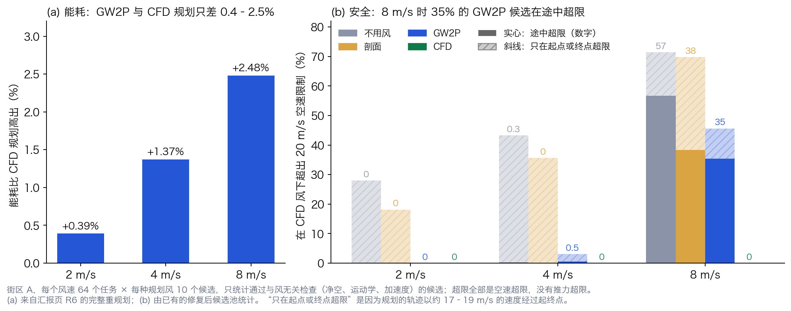
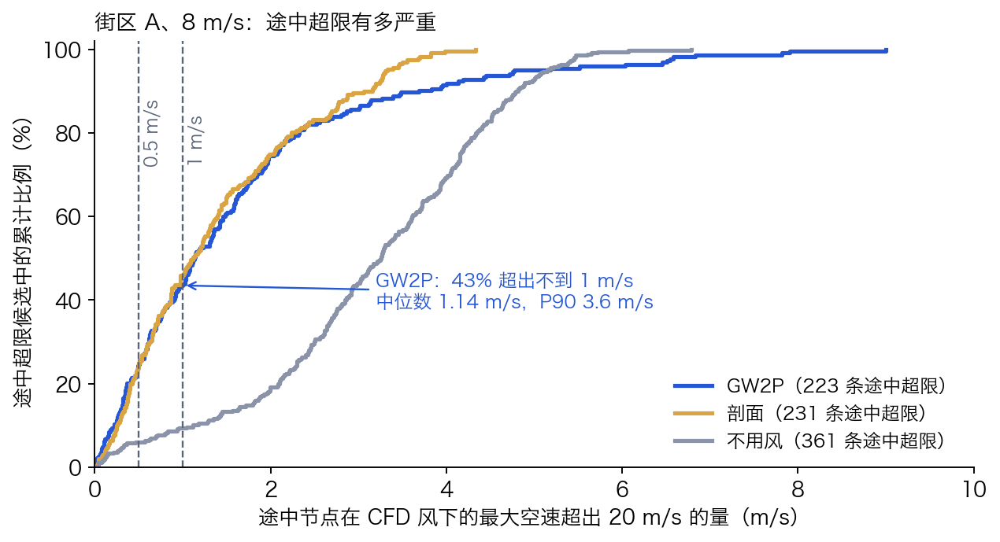
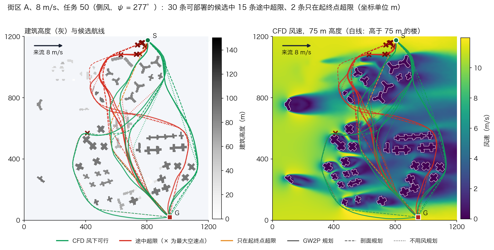
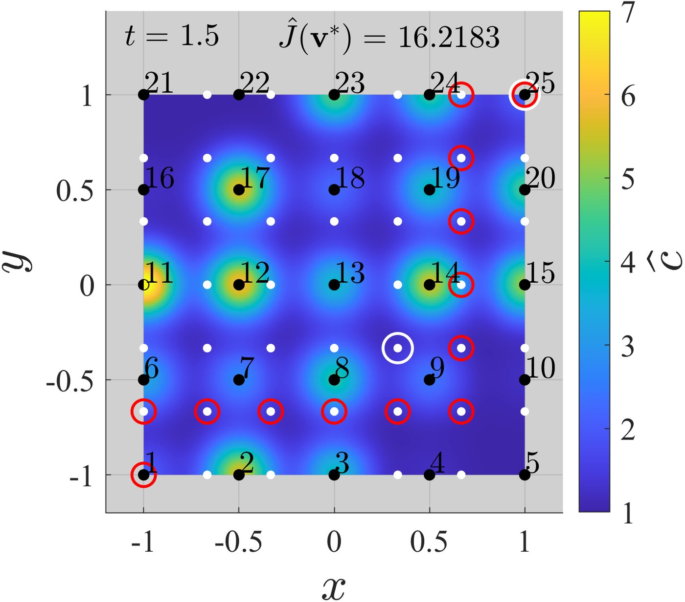
做了什么：按路径代价的不确定度（而不是场的不确定度）选传感器位置，循环做“测量、更新、重规划”；证明了目标是次模函数，贪心选点近似最优。
差别：它降低的是当前路径代价的方差；场是标量威胁场，代价对场线性。我们要降低选错的期望损失，场是三维风，能耗非线性，还有空速限值。
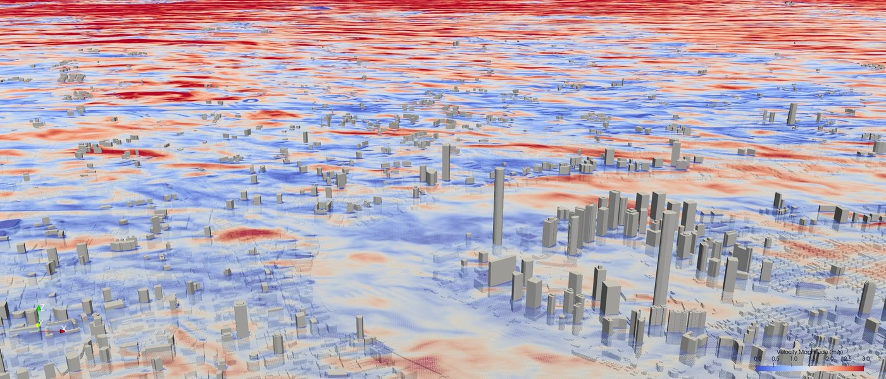
做了什么：中国 5 座城市，720 个工况（16 个来流方向 × 3 个风速 × 3 个季节），10 m 网格，带 TKE；定义了 5 个基准任务，其中有稀疏传感器重建和适航风合规评分。
差别：任务按场或分数的精度打分，没有“测量 → 决策”的闭环。数据发布后，多来流方向正好能补我们最缺的部分。
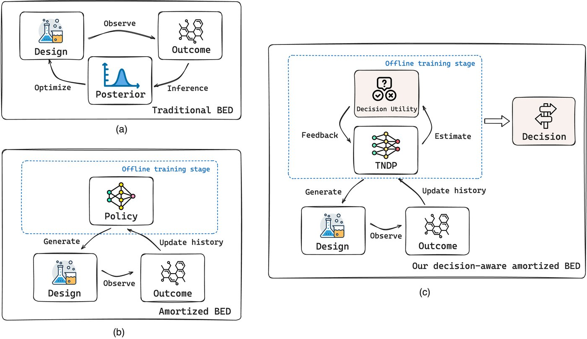
做了什么：用一个网络同时给出下一个实验和最终决策，训练目标是下游决策的效用，而不是参数的信息量。
用处：摊销选点的模板，适合给 agent 用。它没有空间场，也没有规划约束。
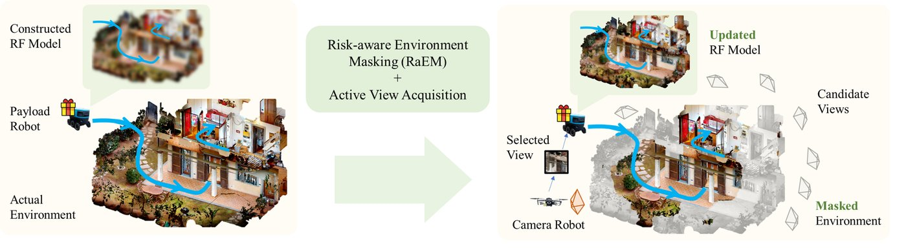
做了什么：在 FisherRF 的信息增益上加一个路径附近的掩码，优先降低机器人路径周围的不确定度。
差别：CV 里最接近“侦察机为任务机测风”的设定，但目标仍是路径附近的信息量，场景是室内几何，不是风。
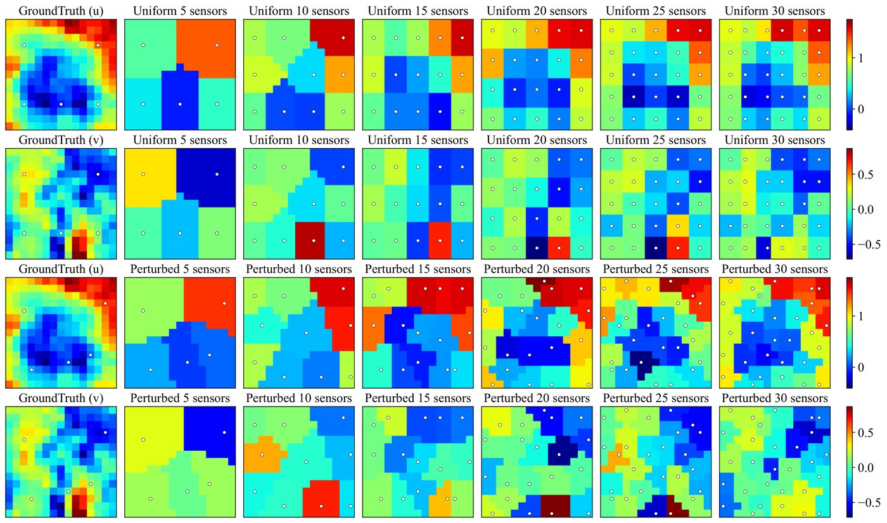
做了什么：风洞城市模型上，从稀疏传感器重建屋顶高度的风速，比较确定性和生成式方法，也研究了传感器位置。
差别：目标是重建精度。东京大学生产技术研究所参与，可能是东京数据的合作方。
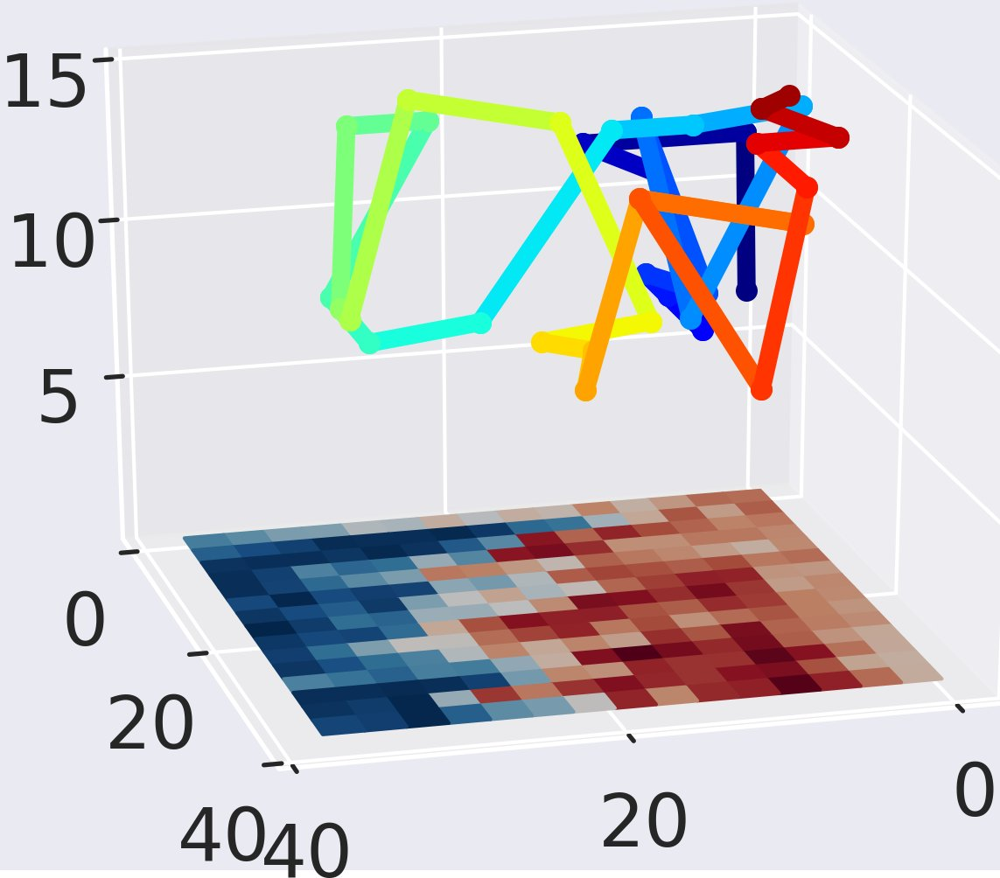
做了什么：树搜索加离线学到的策略网络，实时决定无人机下一步去哪测。
用处：目标是地图的信息量，但“树搜索 + 学到的策略”这套机制可以借来做非短视的选点。
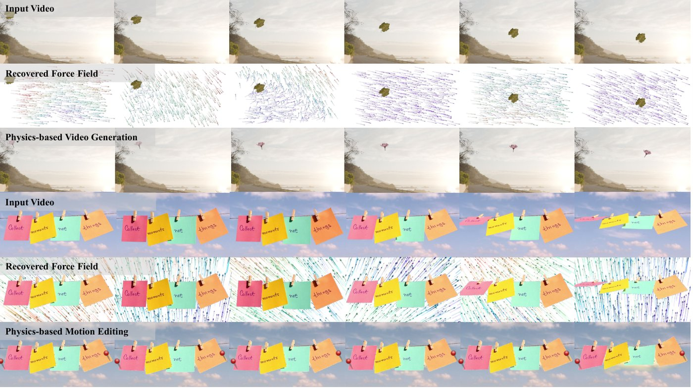
无人机的相机也许能从树、旗子的运动估计局部风，适合投 CV 会议时作为附加的测量方式，不是主线。arXiv 2512.00762
| 其他相关工作（没有可公开转载的配图，只列要点） | ||
|---|---|---|
| 工作 | 内容 | 和我们的关系 |
| 机载风估计（NeurIPS 2025） | 只用 IMU 近实时估计局部三维风及其不确定度 | 测量噪声模型的来源 |
| Ware & Roy（ICRA 2016） | 城市 CFD 风 + 功耗模型，风感知轨迹减少空速超限导致的失败 | 早期证据；没有主动测量 |
| 聚类概率框架 | 多工况仿真 → 带不确定度的风估计，按最小不确定度选传感器位置 | 目标是不确定度；算例只有三栋楼 |
| 面向目标的传感器布置 | 按一个连续目标量的预测不确定度布点（C-optimal） | 连续目标，没有离散选择和约束 |
| Knowledge gradient（2008、相关信念版 2009） | 在若干备选中选最优时，单次测量带来的决策价值 | 选点公式的来源 |
| Decision-focused learning 综述（JAIR 2024）、面向价值的功率预测 | 预测模型按下游决策的结果训练 | 主线 ① 的背景 |
| 带远程感知的 Canadian Traveler Problem（IJCAI 2009） | 边是否通行未知，可以花代价远程查看 | 边飞边测的经典离散版本 |
| 风不确定下的配送路由（2604.13441、2608.11641） | 在线更新风的估计，按能量可行性和任务成功率路由 | 风是图上的边权；可借任务成功率指标 |
| conformal（约束收紧、算子学习） | 有覆盖率保证的不确定度带 | 安全余量和后验的工具 |
| EmbodiedCity、CityEQA、UAV-ON、TRAVEL、UAVBench | 真实城市三维仿真里的具身导航和问答 | 没有建筑尺度的风场 |
| 合规的 DRL + LLM 规划、带约束执行层的 LLM 飞行 | LLM 理解规则和任务，数值约束交给规划器 | 支持 Qwen 只做编排的定位 |
| RL 滑翔机找上升气流（Nature 2018） | agent 在看不见的气流里探索并利用它 | “在看不见的风里探索”的先例 |
| NASA AERoCAST、WHILS | 先进空中交通的风和湍流感知；回答什么时候、在哪里飞是安全的 | 工业界关心安全和可飞性 |
相关工作的描述是转述。论文配图只选了允许转载的：CRMI 为 CC BY-NC-ND 4.0（原图未改动，只缩放），其余为 CC BY 4.0。
| 决策空间要扩大：现在只在约 10 条相似的候选里选 | |
|---|---|
| 能不能飞、要不要等 | 5 m/s 规则、空速限值；选错就是事故或违规 |
| 走哪条走廊 | 开阔区风大，楼后风小（10.2 的例子） |
| 飞多高 | 来流剖面里 30 m 和 120 m 的平均风速差 3 倍以上 |
| 多点任务和电量 | 估错风，电量可能不够返航 |
| 指标（安全优先） | |
|---|---|
| 失败率 | 选中的航线在 CFD 风下途中超限的比例（主指标） |
| 不飞率 | 判断为不可行、选择不飞的比例；和失败率一起画权衡曲线 |
| regret | 都可行时，比“知道真实风”的最优航线多耗的能量 |
| 测风成本 | 测点数、绕路能量；按风速、扇区、楼高分层报告 |
| 设置（只用 CPU，3–4 天，不需要新数据） | |
|---|---|
| 数据 | 街区 A / 8 m/s 为主，A–E / 4 m/s 作对照；候选池每个任务最多 30 条（GW2P、剖面、不用风） |
| 决策规则 | 在估计可行的候选里选期望能耗最低的一条；没有可行的就不飞；扫描阈值画失败率和不飞率的曲线 |
| 选点方式 | 不测；只用先验 + 安全余量；沿候选航线均匀测；GP 方差；CRMI；按决策价值（knowledge gradient：候选能耗差 + 超限概率）；用 CFD 的 oracle |
| 预算 | K = 8 / 16 / 32；单任务和 64 个任务共享两种 |
| 缩放检验 | A 同时有 4 和 8 m/s 的 CFD，先检验“8 m/s ≈ 4 m/s × 2”；成立的话，B–E 也能补成强风工况（候选要用新规划器生成） |
| 包装方向 | 主打 | 适合 |
|---|---|---|
| 方法 + 基准 | 问题定义、选点方法、带失败率的基准 | NeurIPS / ICLR、D&B |
| 主动感知 | 看不见的三维场的主动感知；决策相关图和不确定度图对比 | CVPR / ICCV |
| 机器人 | 闭环测风重规划；噪声按实飞数据标定 | CoRL / RSS / ICRA |
局限：缩放检验通过之前，强风只有街区 A 一个工况、64 个任务，判定实验只用来判断方向。新的来流方向要等 LBM 或 U3DWind 的数据。
| # | 任务 | 测什么 | 数据 | 指标 | 现在能做吗 |
|---|---|---|---|---|---|
| 1 | 边测边飞（闭环） | 飞行中测风、更新风场、重新规划；把 §3.2 的“固定池重排”扩成闭环 | GeoWind2Plan，探针读数从 CFD 取 | 总能耗（含测风绕行）、与 CFD 规划的差距 | ✅ 可以 |
| 2 | 可飞空域判定 | 按预测风判断哪些走廊和高度能飞：日本标准手册的 5 m/s 规则，加空速和推力限制 | GeoWind2Plan；强风只有街区 A 的 8 m/s | 不可飞区域的查准率 / 查全率（以 CFD 为准） | ✅ 可以，但强风只有一个工况 |
| 3 | 电量内巡检 | 一块电池访问多个点，每段代价由风决定（带风的定向越野问题） | GeoWind2Plan | 访问点数、剩余电量、约束违例率 | ✅ 可以，要新写任务生成 |
| 4 | 跨城市零样本 | 留一城市训练和测试；大阪（E）是唯一的日本城市，范围也最大（3 × 3 km），最适合当东京的替身 | GeoWind2Plan 5 座城市 | 留出城市的回收率、违例率 | ✅ 可以（UNet / FNO 已按留一街区做过） |
| 5 | 真实飞行测风 | 从飞行日志估计风，和 WindSeer 的预测对比 | WindSeer 的 13 次 UAV 飞行 | 风速、风向误差 | ⚠️ 数据已在手，但是山地，不是城市 |
现有数据做不了：改变来流方向（7 个工况方向相同）、随时间变化的天气、湍动能和阵风风险（只有平均风）、在东京飞行高度上打分（没有真值）。
| 步骤 | 做什么 | 产出 | 需要什么 |
|---|---|---|---|
| 1 · 几何 + 零样本预测 | PLATEAU 建筑模型 → 4 m 分辨率高度图（屋顶层数，每层 1.5 m，与 GeoWind2Plan 的编码一致）→ 用作者发布的 2D FNO 直接预测 | 东京飞行高度的预测风场；之后可以加进 §6 的交互版 | 不用训练；但没有真值，只能看图 |
| 2 · 自己算真值 | GPU LBM：先在 AIJ Case D（风洞）上验证求解器，再算 3 块东京区域：霞关 Kasumigaseki（与 UrbanTALES 的 JP-Tok-V1 重叠，可做行人高度对照）、西新宿（超高层）、一块密集低层区；每块 4–8 个来流方向 | 东京的 CFD 真值：能给步骤 1 打分，也能测对新来流方向的泛化 | 空闲 GPU；求解器许可核对 |
| 3 · 加时间维度 | 接日本气象厅（JMA）逐小时的背景风：每小时取最近的来流方向，按风速缩放（与网页版的 U / 4 m/s 缩放同理） | 随时间变化的城市风场 | 气象数据接入 |
| 4 · agent | 把法规写成硬约束（150 m、机场周边、DID、5 m/s）；Qwen 做决策层（去哪测、何时飞、何时等），规划器出轨迹，检查器把关（与 §9.2 一致） | 东京 demo：自然语言任务 → 测风 → 规划 → 飞行动画 | 步骤 1–3；“自由探索”的定义（11.5） |
| 工作 | 做了什么 | 和我们的差别 / 用处 |
|---|---|---|
| PLATEAU UC22-005（丰川市） | 在 LOD1 建筑上用 AcuSolve 算 1 m 网格的 CFD，把涡度风险映射到 10 m 体素，再用 Dijkstra 规划；实飞时绕行航线的机体倾角更小 | “城市风场 → 航线 → 实飞”的完整链条；但调参要几天，超过 10 km² 难以计算，没有学习型预测 |
| iCFD（东京风速图 · 无人机航线研发 · WindMind City） | 东京 1.5 m 高度的风速图；面向无人机航线的城市风研发；网页风场展示 | 行人高度；企业项目，数据不公开 |
| OpenReview PIZRXV3q6E | Unity 里的曼哈顿场景，4 个风向 × 10 个风速的 CFD；PPO 策略 + LLM 选择飞行模式；报告时间 −16%、碰撞 −50%、能耗 −18% | 和“城市风 + agent”最接近的已有工作，需要精读；单一场景，风场来自离散的 CFD 工况 |
| UAV-ON · TRAVEL · UAVBench | 无人机导航和 agent 基准 | 没找到建筑尺度的风场；投稿前要做完整的新颖性核查 |
| UrbanTALES 东京 5 区 | PALM LES，水平 1 m、垂直 0.5 m；区域为 Takahashi、Kasumigaseki、Kotobashi、Toyama、Tomigaya | 公开文件只有行人高度的 2D 场（Uped、TKEped 等，1152 × 624）；可做行人高度对照 |
| 论文 | |
|---|---|
| GeoWind2Plan | arXiv:2609.36056 · 网页 demo |
| WindSeer | Nat. Commun. 2024 |
| PhySense | arXiv:2505.18190 |
| Senseiver | Nat. Mach. Intell. 2023 · differentiable walk（MLST） |
| Transolver | arXiv:2402.02366 |
| GINO · FNO | arXiv:2309.00583 · arXiv:2010.08895 |
| GenDA | arXiv:2601.11440 |
| TurbDiff · Gen4Turbulence | arXiv:2306.01776 · arXiv:2509.08752 |
| jaxipm | arXiv:2606.26341 |
| Diff-SPORT · WinDiNet | arXiv:2506.00214 · arXiv:2603.21210 |
| Caltech · WESPR · Sculpt · WindINR | 2608.10309 · 2603.09194 · 2610.07033 · 2605.09511 |
| FunSearch · AlphaEvolve | Nature · arXiv:2506.13131 |
| ShinkaEvolve · ReEvo · EoH | 2509.19349 · 2402.01145 · 2401.02051 |
| Eureka · LLM-SR · LLAMBO | 2310.12931 · 2404.18400 · 2402.03921 |
| 为决策而测风（§10） | CRMI · U3DWind · TNDP · RaEM · 屋顶风场重建 · 自适应 IPP · 机载风估计 · knowledge gradient |
| 城市风 × agent · 无人机基准 | OpenReview PIZRXV3q6E · UAV-ON · TRAVEL · UAVBench |
| Zephyrus · VoxPoser · KnowNo | 2510.04017 · 2307.05973 · 2307.01928 |
| 代码 / 数据 / Demo | |
|---|---|
| 4D 风场航线 demo | 交互版（街区 A）；§6 为录屏；作者的官方演示 geowind2plan.com（5 个街区）；均为 CC BY-NC 4.0 |
| 风场与规划代码 | GeoWind2Plan · WindSeer · PhySense · Senseiver · Transolver · neuraloperator · GenDA · TurbDiff · Gen4Turbulence · Diff-SPORT · WinDiNet · wind_aware_ros · jaxipm · spineax · urbanFlowGen |
| LLM / 程序搜索代码 | FunSearch · OpenEvolve · ShinkaEvolve · ReEvo · EoH · Eureka · LLM-SR · LLAMBO · VoxPoser · Zephyrus |
| 数据 | WindSeer（ETH，CC BY 4.0） · Feilian-3D（Zenodo） · U3DWind（论文） · UrbanTALES |
| 东京与法规（§11） | PLATEAU 东京 23 区 · PLATEAU UC22-005 · 国土交通省飞行规则 · 标准飞行手册（PDF） · iCFD 东京风速图 |